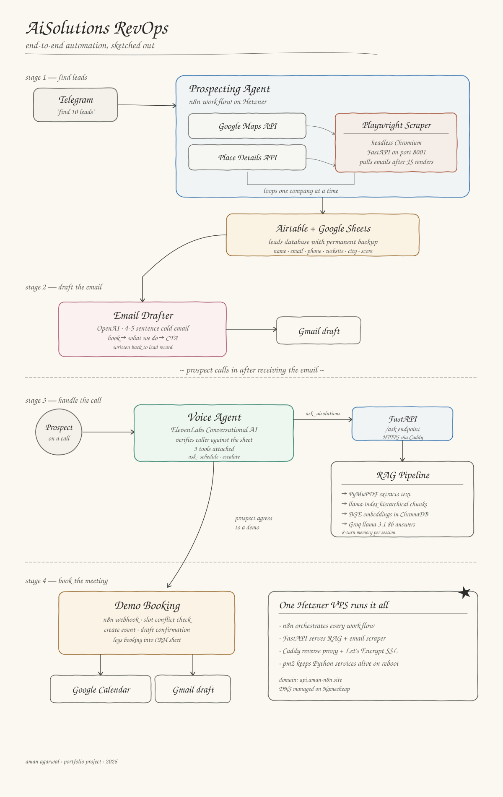
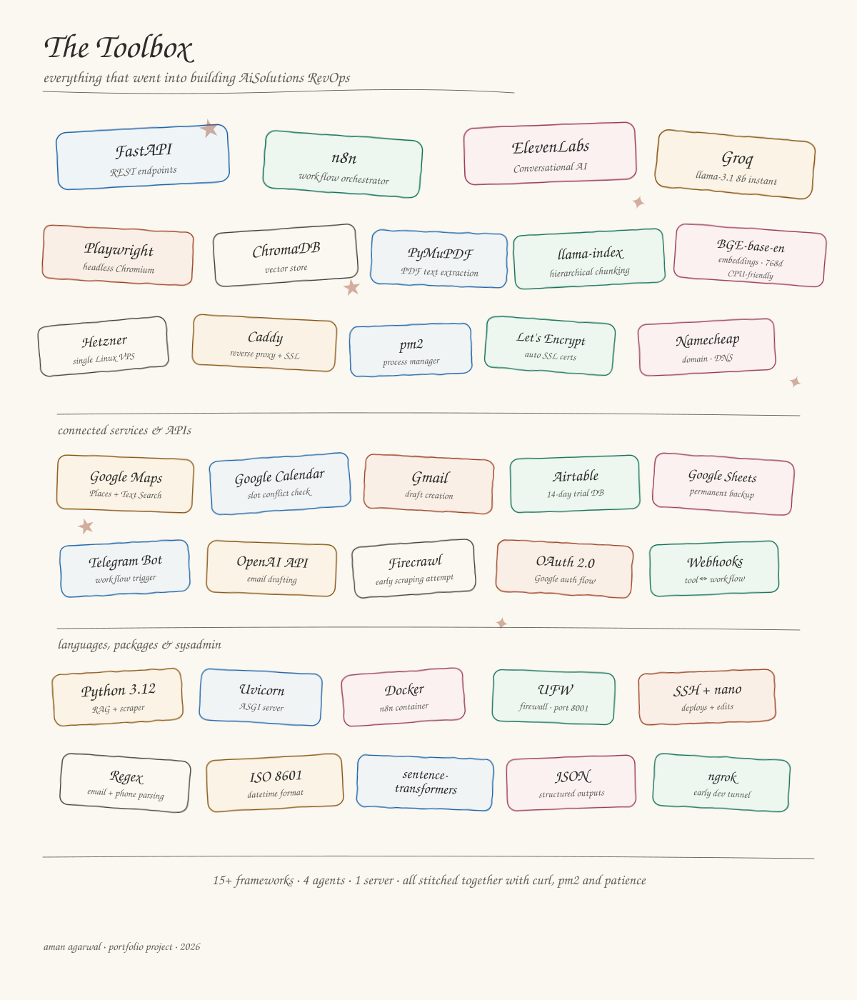

An end-to-end revenue operations system built for a fictional company called AiSolutions — an AI integration firm working with aluminium coil manufacturers in India. The project covers the entire funnel: discovering prospects, drafting outreach emails, handling inbound voice queries with a custom RAG system, and booking demos onto a real calendar. All four stages are wired together and run on a single self-hosted stack.
Architecture Overview

Hand-sketched architecture diagram — four agents, one server.
What the System Does
The project is structured as four agents that hand off to each other. Each agent owns one stage of the funnel and writes to a shared database so the next stage can pick up where the last one left off.
1
Stage 1
Prospecting Agent
Triggered from Telegram with a natural language query. Uses Google Maps and a custom website scraper to discover real companies, pull websites, and extract contact emails. Qualified leads are written to Airtable with Google Sheets as a permanent backup.
2
Stage 2
RevOps Email Drafter
Picks up every new lead and generates a short, four-sentence cold email tailored to that prospect — pain point hook, one-liner on what AiSolutions does, and a CTA for a 30-minute OEE audit call. Drafts are pushed to Gmail as ready-to-send.
3
Stage 3
Voice Agent with RAG
Built on ElevenLabs Conversational AI. When a prospect calls, the agent identifies the caller, answers product questions using a custom RAG pipeline built on the company's knowledge base PDF, and routes toward escalation or demo booking.
4
Stage 4
Demo Booking
When the prospect agrees to a demo, the voice agent collects details and calls an n8n webhook that checks Google Calendar for conflicts, creates the event if the slot is free, drafts a confirmation email, and logs the booking into a CRM sheet.
Workflow Breakdown
Stage 1 — Find Leads
1
Telegram Trigger
A Telegram message kicks off the workflow. An AI Agent node parses the query into structured fields — industry, city, requested count — and writes a record to the Airtable Searches table with status Pending.
2
Google Maps Discovery
The Google Maps Text Search API returns roughly twelve candidates. A Code node normalises the response to extract name, address, rating, and place_id for each. The Place Details API call then returns the website and phone number.
3
Playwright Email Scraper
If a website exists, the workflow hits a custom FastAPI endpoint on port 8001. That endpoint uses Playwright to load the page in a headless Chromium instance, wait for the DOM to settle, and pull out emails — including obfuscated formats like info [at] company [dot] com. Falls back to /contact, /contact-us, and /about pages if the homepage has nothing.
4
Lead Storage
Leads with a valid email are scored, saved to the Airtable Leads table, and mirrored to Google Sheets. After the loop completes, an Aggregate node collapses the results and a Telegram message confirms how many leads were captured.
Stage 2 — Draft the Email
1
OpenAI Cold Email Generation
Sitting inside the same loop as lead capture, an OpenAI node generates a personalised cold email. The prompt is locked to a strict structure — four to five sentences, one hook referencing a specific manufacturing pain, one line on what AiSolutions does, and a CTA for a 30-minute OEE audit. No subject line, no signoff, no fluff.
2
Gmail Draft Push
The draft is written back to the Airtable Leads record in a draft_email field and optionally pushed to Gmail as a draft so the salesperson can review and send with one click.
Stage 3 — Handle the Call
1
RAG Pipeline Preparation
The knowledge base PDF runs through a five-step pipeline. PyMuPDF extracts raw text. HierarchicalNodeParser splits it into parent chunks of 1024 tokens, mid-level chunks of 256, and leaf chunks of 64. BGE-base-en-v1.5 embeds the leaf chunks into ChromaDB with parent references kept in metadata.
2
FastAPI /ask Endpoint
At query time, the system retrieves the top five leaf chunks, deduplicates by parent_id, and feeds the parent context to Groq's llama-3.1-8b-instant. The /ask endpoint accepts a question and a session_id — isolating conversation memory per caller, capped at eight turns to stay within Groq's token limit. Caddy fronts it with a Let's Encrypt certificate at https://api.aman-n8n.site/ask.
3
ElevenLabs Voice Agent
The agent is configured with three tools — ask_aisolutions for RAG calls, schedule_meeting for booking, and a webhook for sales escalation when the agent cannot resolve a query. The system prompt also handles escalation logic verbally if the prospect asks for a human.
Stage 4 — Book the Meeting
1
Data Collection
When the conversation reaches a demo agreement, the voice agent collects name, company, email, phone, and preferred datetime in ISO 8601 format, then calls an n8n webhook at /webhook/schedule-meeting.
2
Slot Conflict Check
The workflow runs a Get Many Events query against Google Calendar within a one-hour window of the requested slot. If any event exists, the workflow returns slot_taken and the voice agent asks for another time.
3
Booking Confirmation
If the slot is free, a Google Calendar event is created with the prospect added as an attendee, a Gmail confirmation draft is generated, the booking is logged into a CRM Demo Booking sheet, and a success response is returned. The voice agent confirms verbally and the call ends.
Difficulties & How They Were Solved
1
The website scraper kept returning blank emails
The initial scraper used the requests library and a regex pattern. It worked on a few static sites but failed on the majority. Even when the email was clearly visible in the browser, the scraper returned nothing. The root cause: most modern company websites are built with React, Vue, or Angular. A plain HTTP request only fetches the raw HTML shell — the actual content gets injected later by JavaScript. A simple regex scraper sees a near-empty document.
✓ Fix
Switched to Playwright — a headless browser that actually opens the page, executes all JavaScript, waits for the network to settle, and only then reads the rendered HTML. Rewritten to launch Chromium per request, navigate with a domcontentloaded wait plus a three-second buffer for late-loading scripts, and fall back to /contact and /about if the homepage returned nothing. Deployed as a FastAPI service on port 8001. Email extraction success rate jumped sharply after this change.
2
RAG retrieval kept pulling the wrong chunks
The first version used a SentenceSplitter with a 150-token chunk size. Every test query returned roughly the same set of chunks with cosine distances all clustered between 0.86 and 0.91 regardless of the question. Three other chunking strategies were tried and rejected before the final approach — token splitting at 150 and 300 tokens both fragmented FAQ pairs, a regex-based section splitter helped slightly, and a semantic splitter actually made distances worse.
✓ Fix
Switched to HierarchicalNodeParser with three levels — parent chunks of 1024 tokens, mid-level at 256, and leaf chunks at 64. The retriever searches against small leaf chunks (sharper semantic boundaries), then deduplicates by parent ID and feeds the larger parent context to the LLM. Also upgraded the embedding model from MiniLM to BGE-base-en-v1.5, which has better separation on domain-specific text. Edge cases were patched by tightening the system prompt and pinning key facts directly rather than relying on retrieval.
3
Calendar slot detection silently broke the workflow
The Get Many Events node was configured to return events overlapping the requested datetime window. The problem: when no events existed — exactly the free-slot case we wanted — the node returned no items and the workflow halted silently. The IF node downstream never even ran. Two other bugs compounded this: expression fields had double equal signs from toggling expression mode after manually typing the prefix, and the attendees field was configured as an array when the API expected a plain comma-separated string.
✓ Fix
Enabled Always Output Data on the Get Many Events node — with that on, the node produces an empty item when zero events are found, keeping the workflow moving. The IF node was rewritten to check whether the event ID field was empty — empty meant free, present meant taken. The expression and attendees field issues were straightforward to fix once spotted, but they were a reminder of how much time gets lost to small wiring quirks in low-code platforms.
Key Learnings
🌐
Static HTTP scrapers will fail on most modern websites. If a website is built with React, Vue, or Angular — which most company sites now are — a plain requests.get() call returns an empty shell. The content you see in a browser is rendered by JavaScript after the page loads. To scrape these reliably, you need a headless browser like Playwright that actually runs JavaScript before reading the DOM. This is not a problem you can prompt your way around — the architecture has to include a real browser somewhere in the loop.
🧠
RAG quality is mostly about chunking, not the model. Four different chunking strategies were tried before retrieval started working. Switching embedding models helped at the margins. Tweaking the prompt helped at the margins. But the order-of-magnitude improvement came from hierarchical chunking — small leaf chunks for retrieval, larger parent chunks for context. If retrieval is returning the wrong context, the answer is almost always upstream of the LLM. Start by inspecting what chunks are coming back, look at the cosine distances, and fix the chunking before reaching for a bigger model.
🔇
In low-code platforms, the silent failures are worse than the loud ones. A node throwing a red error is easy to debug. A node that returns no output and quietly halts the workflow — with no error at all — can eat hours. The habit picked up by the end: enable Always Output Data on any node whose empty output should not terminate the workflow, and double-check loop wiring whenever an iteration count looks wrong.
Final Architecture
Telegram trigger↓Prospecting Agent (n8n)├── Google Maps Text Search and Place Details├── Playwright email scraper (FastAPI, port 8001)├── Airtable Leads + Google Sheets backup└── OpenAI cold email drafter → Gmail draft↓Inbound call from prospect↓ElevenLabs Voice Agent├── ask_aisolutions → FastAPI /ask → RAG pipeline (ChromaDB + Groq)├── schedule_meeting → n8n webhook → Google Calendar + Gmail + Sheets└── Sales escalation → n8n webhook → Notification to sales head
Everything runs on a single Hetzner VPS. n8n handles orchestration, FastAPI serves the RAG and scraper, Caddy handles SSL and routing, and pm2 keeps the Python services alive across reboots.
Demo
A full walkthrough of the AiSolutions RevOps system — from a Telegram prospecting query all the way through to a booked demo on Google Calendar.
The Toolbox
Every tool in this stack was chosen deliberately — free or self-hosted infrastructure, running on an 8 GB RAM laptop with no GPU during development.
Layer
Tool
Why
PDF Parsing
PyMuPDF
Lightweight, accurate text extraction, no native dependencies
Chunking
llama-index HierarchicalNodeParser
Parent-child chunk hierarchy gave the best retrieval quality after testing four strategies
Embeddings
BGE-base-en-v1.5
768-dimensional, CPU-friendly, stronger domain retrieval than MiniLM
Vector Store
ChromaDB
Local persistence, metadata filtering, no server process needed
LLM
Groq + llama-3.1-8b-instant
Cloud inference, no GPU needed, generous free tier
API Layer
FastAPI + Uvicorn
Async support, automatic Swagger docs at /docs for testing
Process Manager
pm2
Keeps FastAPI alive across SSH disconnects and reboots
Reverse Proxy + SSL
Caddy + Let's Encrypt
Automatic certificate issuance and renewal, no Certbot config needed
Required to render JS-heavy company sites before extracting emails
Lead Database
Airtable + Google Sheets
Airtable for the 14-day trial, Sheets for permanent storage
Calendar + Email
Google Calendar + Gmail via OAuth
Slot conflict checks, event creation, and draft generation
Hosting
Hetzner Linux VPS
Single server running n8n, FastAPI, and the email scraper
Domain + DNS
Namecheap
Managed the api.aman-n8n.site subdomain

15+ frameworks · 4 agents · 1 server · all stitched together with curl, pm2 and patience.
🏗️
The Result
"Four agents. One server. Zero cloud vendor lock-in. A full revenue funnel — from cold lead to booked demo — running entirely on self-hosted infrastructure."